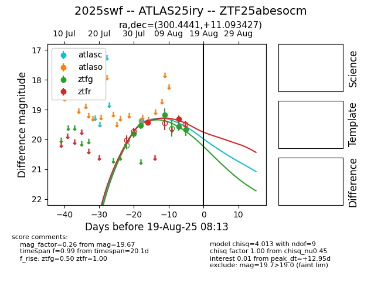

Target 2025swf at 2025-08-19 08:13, see:
FINK: fink-portal.org/2025swf
Lasair: lasair-ztf.lsst.ac.uk/objects/2025swf
ALeRCE: alerce.online/object/2025swf
TNS: wis-tns.org/object/2025swf
YSE: ziggy.ucolick.org/yse/transient_detail/2025swf
alt names
ZTF25abesocm (ztf,fink)
2025swf (tns,yse)
ATLAS25iry (atlas)
coordinates:
equatorial (ra, dec) = (300.4441,+11.09343)
galactic (l, b) = (51.0691,-10.14377)
photometry
last atlasc=19.38, ztfg=19.67, ztfr=19.31
1 atlasc, 5 ztfg, 2 ztfr detections
